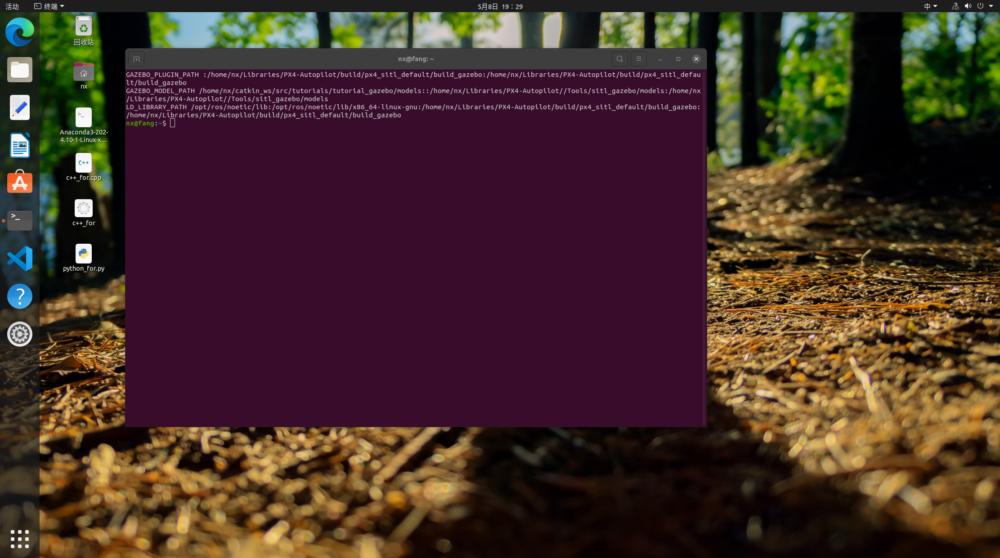

03-Ubuntu和ROS基础
一、Linux文件系统
1-文件系统框图
Linux文件系统采用级层式的倒树状目录结构，最上层为根目录/
graph TB
A["/"]
B["bin"]
C["boot"]
D["grub"]
E["lost+found"]
F["dev"]
G["etc"]
H["home"]
I["lib"]
G["proc"]
K["usr"]
L["bin"]
M["local"]
N["bin"]
O["man"]
P["src"]
Q["..."]
R["man1"]
S["php.1"]
T["share"]
U["..."]
V["var"]
W["..."]
A --> B
A --> C
C --> D
C --> E
A --> F
A --> G
A --> H
A --> I
A --> G
A --> K
K --> L
K --> M
M --> N
M --> O
M --> P
M --> Q
O --> R
R --> S
K --> T
K --> U
A --> V
A --> W
2-目录列表
| 地址 | 作用 |
|---|---|
| / | 根目录 |
| /bin | 重要的二进制（binary）应用程序，主要放置一些系统的必备执行档，如cp、cat、ls等 |
| /boot | 启动（boot）配置文件 |
| /etc | 配置文件、启动脚本等（etc） |
| /home | 本地用户主目录 |
| /root | root用户主文件夹，读作“slash-root“ |
| /usr | 包含绝大部分所有用户都能访问的应用程序和文件 |
| /sbin | 重要的系统二进制（system binary）文件 |
| /proc | 特殊的动态目录，用于维护系统信息和状态 |
| /var | 经常变化的（variable）文件，诸多日志或数据库等 |
| /lib | 存放库文件，例如系统使用的函数库的目录或者程序运行中需要用到的库 |
Windows的绝对路径中，目录使用\分隔符，Linux的绝对路径中，目录使用/分隔符。
3-Ubuntu操作
主要可以参考教程01-基础概述
终端操作
在Linux系统中，可以通过终端程序输入指令来进行各项操作。
可以从开始菜单启动终端程序

也可以按下Ctrl+Alt+T打开

同时按下Ctrl和D可以快速关闭终端
echo命令
将想要的内容覆盖到对应的文件中去，文件当中之前的内容将去除，修改了原文件的内容
1 | |
将想要的内容追加到文件后，对文件之前的内容不修改，只进行增添，也叫追加重定向
1 | |
二、远程方案及代码同步
1-无人机远程——SSH
局域网链接
- 让机载电脑(NX)和自己的计算机连接同一个网络(wifi或热点均可)，在NX上打开一个终端,输入ifconfig，在wlan0中找到NX的ip地址。
- 在自己的计算机使用快捷键win+R打开运行窗口，输入cmd打开终端，输入ssh username@ip回车即可建立远程连接，其中nx为NX的用户名，192.168.1.3为NX的ip地址。
2-无人机代码同步
编译
代码同步最简单的办法就是使用U盘移植或直接在板载计算机中修改，不管是U盘移植还是直接修改，修改后都要进行重新编译，否则可能导致修改的内容不生效。
代码移植后，在工作空间catkin_ws下，删除build和devel文件夹，然后打开一个终端，输入catkin_make,等待编译结束即可。
代码托管
若使用代码托管，优先考虑git，在Gitee/GitHub创建一个仓库，然后在自己的电脑和nano上都配置ssh key 填入gitee账号中。
具体方法可以参考文章04-Git进行代码托管
三、ROS基础
ROS 使用分布式通信模型，允许多个节点(Node)通过特定的协议进行数据传输。节点可以运行在不同的计算机上，也可以在同一台计算机上。ROS 的通信机制提供了高效、灵活的消息传递方式，可以支持异步和同步操作。满足实时性要求。
节点(Node):一个 ROS 系统中的最小工作单元，通常代表一个功能模块（如控制器、传感器处理器、路径规划器等）或者说子系统。
ROS 的通信机制包括以下几种主要方式：
- 话题(Topic)
- 服务(Service)
- 动作(Action)
- 参数(Parameter)
1-话题（Topic）
话题（Topic）是ROS中最常用的通信机制，它采用发布/订阅（Publisher/Subscriber）模型。节点通过话题来传递数据，这种方式非常适合进行实时的数据流传输。一个节点可以发布数据到一个话题，其他节点可以订阅该话题接收数据。
工作原理：
- 发布者（Publisher）：发布者向话题发送消息，其他节点通过订阅相同的主题来接收消息。
- 订阅者（Subscriber）：订阅者从话题中接收消息，进行处理。
特点：
- 解耦：发布者和订阅者并不直接通信，它们通过中介（ROS Master）来实现数据交换。发布者不需要知道有多少订阅者，订阅者也不需要知道有多少订阅者，订阅者也不需要知道消息的来源。
- 异步传输：消息通常是异步传输的，发布者发布消息后并不会等待订阅者的回应。
- 广播机制：一个话题可以被多个节点订阅，允许数据广播。
话题实例
1 | |